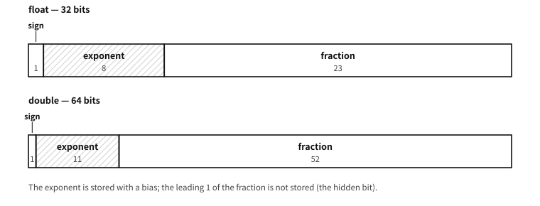

7 Representing numbers — the contract called IEEE 754
What to know first
Looking back
Chapter 6 got as far as signed integers in bits — including three competing ways of holding negatives, settled on two’s complement. But they are all still integers. A number like 1.5 — how is that held in bits?
A. The bits themselves have no decimal point. So the decimal point too is made by agreement — the same principle by which negative numbers were made by an agreement (two’s complement). The way of deciding “where shall we pretend the point is when we read this?” splits into two: pinning the point down (fixed) and carrying the point along in the data (floating). This chapter is the story of those two branches.
The need for this chapter, and its context
%f, chapter 52′s bit-level inspection and chapter 78′s <math.h> all call back to the IEEE 754 contract set up here (IEEE is the Institute of Electrical and Electronics Engineers, the body that publishes it). Learn about approximation late and you have to go back over everything you wrote until then.By the end of this chapter
The questions this chapter answers
- Why bias the exponent — why not store it in two’s complement?
- How do you choose between the 32-bit
floatand the 64-bitdoublein practice? - Integer overflow in chapter 6 and rounding in this chapter are both problems of “a finite container” — are they the same kind of problem?
7.1 Fixed point — pinning the decimal point down by agreement
The first method is surprisingly simple. Just use an integer, and change the unit.
Money is a good example. To store 1,500.25 won, agree that “our ledger is written entirely in units of 0.01 won” and store the integer 150025. The decimal point is stored nowhere — everyone reading and writing merely shares the agreement “pretend there is a point two digits from the end.” This is fixed point: the position of the point is fixed by agreement.
The virtue of fixed point is that it is an integer. Addition and subtraction are as fast and exact as integer operations, with no approximation. So it is still in active service for money calculations and on small embedded chips with no decimal hardware. Its weakness is stiffness — one agreement cannot cover both very large and very small numbers. You cannot write the mass of a galaxy and the mass of an atom in the same ledger of hundredths.
7.2 Floating point — carrying the point in the data
The second method transfers scientific notation, learned in science class, to the machine. That is, writing a number as — split into “the meaningful digits” and “how many times ten was multiplied in.” Store both the kernel (the significand) and the multiplication count (the exponent) as data, and the decimal point floats along with the exponent — hence floating point. The machine uses 2 instead of 10: it holds numbers in the form .
The power of this method is that it covers an enormous range with the same number of bits. Galaxy and atom fit in one format. The price is precision — the number of digits in the kernel is finite, so anything beyond them is discarded by rounding.
A common misconception. “Computers are good at maths, so of course decimal arithmetic is exact”
The mathematics. Why 0.1 does not terminate in binary
A fraction terminates only when its denominator is made solely of factors of the base. In decimal (base ), ends after one digit. But binary’s base is only 2, so , with a 5 in the denominator, never terminates:
It is the same as being the endless in decimal. A finite significand has to cut this infinity off somewhere, and that cut is the source of the approximation.
7.3 How the bits are really divided
Take “the significand and the exponent are stored together” all the way down to the bit layout. IEEE 754 divides a value into three pieces — the sign (1 bit), the exponent, and the fraction.
| format | total | sign | exponent | fraction |
|---|---|---|---|---|
float (single) | 32 bits | 1 | 8 | 23 |
double (double) | 64 bits | 1 | 11 | 52 |
Table 7.1 — How the bits of float and double are divided

Figure 7.1 — The bit layout of float and double. The width of each field is the ratio of its bit count.
The rules for reading the three pieces are these.
- Sign: 0 for positive, 1 for negative. It is a separate bit, unrelated to the magnitude, which is why
-0.0exists — a zero whose sign bit alone is 1. - Exponent: negative exponents must fit too, so a bias is added before storing.
floatadds 127,doubleadds 1023. A stored 1023 means an actual exponent of 0; a stored 1019 means . - Fraction: in a normalised number — one written with the exponent adjusted so that the leading digit is 1 — the leading digit is always 1, so that 1 is not stored (the hidden bit). Hence
doublestores 52 bits and yet carries 53 bits of precision.
So the value of a normal number is recovered as
The two ends of the exponent range are reserved for special meanings.
| exponent bits | fraction | meaning |
|---|---|---|
| all zero | 0 | zero (+0.0 or -0.0 by the sign bit) |
| all zero | non-zero | subnormal — the hidden bit is taken as 0, filling in densely near zero |
| all one | 0 | infinity ( by the sign) |
| all one | non-zero | NaN — “not a number” |
| anything else | anything | a normal number — the formula above |
Table 7.2 — The special values reserved at the two ends of the exponent
This table is the origin of the properties met in chapter 52. That NaN is not equal to itself, that infinity comes out of overflow, that +0.0 == -0.0 while their bits differ — all of it comes from this layout. Chapter 52 confirms each of them by printing the actual bits.
Q. Why bias the exponent — why not store it in two’s complement?
A. It could be stored that way. The bias has a practical advantage, though — read the bits (apart from the sign) as an integer and the ordering of the reals comes out right. The exponent sits in the high bits, and thanks to the bias a smaller exponent gives a smaller bit pattern, so two positive numbers of the same sign compare correctly even when their patterns are read as unsigned integers. The hardware’s comparison circuits get simpler and work like sorting gets faster. A two’s complement exponent would break that property.
7.4 Three incidents caused by approximation
Look ahead, numerically, at the faces “faithful approximation” wears in practice. (Shown here by calculation on the page; running it in C is chapter 52.)
Incident 1 — 0.1 + 0.2 ≠ 0.3. The most famous non-equation in the programming world. As we just saw, 0.1, 0.2 and 0.3 are all infinite in binary, so the machine holds each one’s “nearest neighbour” instead. And the sum of 0.1′s neighbour and 0.2′s neighbour happens to round the other way from 0.3′s neighbour. Written out in the 64-bit format —
- in the machine =
0.30000000000000004440... - in the machine =
0.29999999999999998889...
Both are faithfully close to 0.3, but they are not each other. So when you ask “are they equal?” (==), the machine answers honestly: no.
Look at the internal representation and the whole incident is visible at a glance. The 64-bit format splits into [1 sign bit | 11 exponent bits | 52 significand bits], and writing these four numbers’ 64 bits in hexadecimal —
| number | 64-bit internal representation (hex) |
|---|---|
| 0.1 | 3FB9 9999 9999 999A |
| 0.2 | 3FC9 9999 9999 999A |
| 0.3 | 3FD3 3333 3333 3333 |
| 0.1 + 0.2 | 3FD3 3333 3333 3334 |
Table 7.3 — The same numbers as 64-bit representations
There are three layers to read here. First, the 9999... in the significands of 0.1 and 0.2 is the repeating binary 0011 seen in hexadecimal, and the fact that the last digit is A and not 9 is the trace of rounding up while cutting the infinity off at 52 bits — the “cut” of the maths box is stamped right into the bits. Second, 0.3′s significand 3333... is the same repetition at a different phase, and this one rounded down at the end. Third — the crux — 0.3 and 0.1+0.2 differ by exactly one final bit. They are the immediate neighbours, one tick apart (1 ulp, in the jargon). == answers “different” even to that one-bit difference, so floating-point “equality” breaks under a discrepancy of a single tick.
Incident 2 — so how do you compare? In the floating-point world the question of equality itself has to change — not “are they exactly equal?” but “are they close enough?” You settle on a tolerance (traditionally called epsilon, ) and count the two numbers as equal if their difference falls inside it:
That is the basic form; in practice there is one more layer — as numbers grow, so does the gap between neighbours (incident 3 below), so instead of a fixed it is safer to use a tolerance proportional to the size of the numbers (relative error). The concrete use of both, and their traps, is covered in C code in chapter 52. What to remember now is one sentence: code that compares floating-point numbers with == is almost always suspect.
Incident 3 — beside a large number, a small one disappears. That the significant digits are finite also means that when two numbers of very different sizes meet in one container, the smaller one vanishes entirely. The place where this shows most cleanly in the 64-bit double (about 15–16 significant decimal digits) is around .
- is again. The 1 that was added simply disappears. And yet becomes and grows properly. There is one reason for this strange contrast — at that magnitude the gap between representable neighbours is exactly 2. With ticks 2 apart, 1 is half a tick and is swallowed by rounding, while 2 is exactly one tick and survives. This phenomenon of a small value being eaten by a large one is called absorption.
- So the limit up to which a
doublecan hold every integer without omission is . Above that the tick spacing exceeds 1 and even integers begin to be skipped — try to hold and you get again. The practical rule “do not put money or identifiers in floating point” comes from here (JavaScript, which handles integers asdouble, hit this same wall and brought inBigIntfor the same reason). - There is an accident in the opposite direction too. Subtracting two nearly equal numbers erases all the leading digits and leaves only the approximation in the last ones — a calculation that started with sixteen significant digits produces an answer with two or three. This is called cancellation, and it is the chief culprit in eroding precision in numerical work.
The three incidents have a single root — the representable numbers are a discrete set of ticks, and the spacing between ticks widens as numbers grow. Near 0 the ticks are dense enough to distinguish something like , but as we just saw, around the spacing exceeds 1 and even integers get skipped. It is no exaggeration to say that a feel for “how many digits can I trust?” (significant digits) is the whole of using floating point.
7.5 The chaos, and the contract called IEEE 754
The idea of floating point was old, but how to hold it — how many bits each for significand and exponent, which way to round — differed by company for a long time. IBM mainframes, DEC’s VAX and Cray supercomputers each used a different format. The same program moved to another machine gave different answers, and numerical programmers had to learn each machine’s arithmetic habits afresh.
In 1985 a standard called IEEE 754 unified the chaos. It is a precise contract that pins down the format (1 sign bit + exponent + significand), the rounding rules, and the treatment of special values such as infinity and “not a number” (NaN). Today virtually every CPU and GPU (graphics processing unit) follows this contract — the 32-bit format (C’s float) and the 64-bit format (C’s double) being the representatives.
The dates are worth noticing. The contract for floating point (IEEE 754, 1985) and the contract for the C language (ANSI C, 1989 — ANSI is the American National Standards Institute) were born within a few years of each other. It was an era in which the industry, unable to bear vendor-by-vendor arbitrariness any longer, turned to “let us write contracts” — and we meet this “age of contracts” again in chapter 13.
Q. How do you choose between the 32-bit float and the 64-bit double in practice?
A. The default is double. The 64-bit format handles about 15–16 significant decimal digits, which leaves room in most calculations. float (about 7 digits) is chosen for its size advantage where memory and bandwidth matter — large numbers of coordinates, graphics, machine learning. “double for precision, float for volume” is roughly right. Actual use in C is covered in chapter 52.
Q. Integer overflow in chapter 6 and rounding in this chapter are both problems of “a finite container” — are they the same kind of problem?
A. The root is the same, the symptoms differ. The integer container is finite in range, so it overflows at the end (and is perfectly exact until it does); the floating-point container is finite in precision, so it approximates a little everywhere (but its range is enormous). An exact but narrow container and a wide but approximating one — a feel for which container to use is a fundamental of handling numbers, and choosing types in C (chapters 28 and 52) is exactly that choosing.
To summarise this rung of the ladder: the decimal point is not in the bits but in an agreement. Pin the agreement down and you have fixed point; carry it in the data and you have floating point, whose agreement is unified by the contract IEEE 754. And numbers under that contract are not exact numbers but faithful approximations.
7.6 Seeing it with your own eyes
“Approximation” is an abstract word. Ask the machine directly and it becomes concrete.
examples-en/ch07/floats.c
/* A look inside the container that holds fractions --- why 0.1 + 0.2 is not 0.3.
The values printed here are the same on any machine that follows IEEE 754. */
#include <stdio.h>
#include <stdint.h>
#include <string.h>
/* Print the bits of a double, split into sign, exponent and fraction */
static void show(const char *label, double v)
{
uint64_t u;
memcpy(&u, &v, sizeof u);
printf("%-10s %.17g\n", label, v);
printf(" sign %u exponent %4u fraction 0x%013llx\n",
(unsigned)(u >> 63), (unsigned)((u >> 52) & 0x7FF),
(unsigned long long)(u & 0xFFFFFFFFFFFFFULL));
}
int main(void)
{
puts("== the famous one ==");
printf("0.1 + 0.2 == 0.3 ? %s\n", (0.1 + 0.2 == 0.3) ? "yes" : "no");
printf("0.1 + 0.2 = %.17g\n", 0.1 + 0.2);
printf("0.3 = %.17g\n\n", 0.3);
puts("== why: 0.1 has no exact form in base two ==");
show("0.1", 0.1);
show("0.2", 0.2);
show("0.5", 0.5);
puts("0.5 is exact (fraction is all zeros); 0.1 and 0.2 are not.\n");
puts("== the error piles up ==");
double sum = 0.0;
for (int i = 0; i < 10; i++) sum += 0.1;
printf("adding 0.1 ten times = %.17g\n", sum);
printf("1.0 = %.17g\n", 1.0);
printf("difference = %.3g\n\n", sum - 1.0);
puts("== a narrower container loses more ==");
float f = 0.1f;
double d = 0.1;
printf("0.1 as float = %.17g\n", (double)f);
printf("0.1 as double = %.17g\n\n", d);
puts("== and some numbers are not numbers ==");
double inf = 1.0 / 0.0e0, nan = 0.0 / 0.0e0;
printf("1.0 / 0.0 = %g\n", inf);
printf("0.0 / 0.0 = %g\n", nan);
printf("nan == nan ? %s (the only value not equal to itself)\n",
(nan == nan) ? "yes" : "no");
return 0;
}
Output
== the famous one ==
0.1 + 0.2 == 0.3 ? no
0.1 + 0.2 = 0.30000000000000004
0.3 = 0.29999999999999999
== why: 0.1 has no exact form in base two ==
0.1 0.10000000000000001
sign 0 exponent 1019 fraction 0x999999999999a
0.2 0.20000000000000001
sign 0 exponent 1020 fraction 0x999999999999a
0.5 0.5
sign 0 exponent 1022 fraction 0x0000000000000
0.5 is exact (fraction is all zeros); 0.1 and 0.2 are not.
== the error piles up ==
adding 0.1 ten times = 0.99999999999999989
1.0 = 1
difference = -1.11e-16
== a narrower container loses more ==
0.1 as float = 0.10000000149011612
0.1 as double = 0.10000000000000001
== and some numbers are not numbers ==
1.0 / 0.0 = inf
0.0 / 0.0 = -nan
nan == nan ? no (the only value not equal to itself)
The first lines are the famous result. Printed to seventeen digits, 0.1 + 0.2 is 0.30000000000000004 and 0.3 is 0.29999999999999999. Both are “the nearest representable value to 0.3” — but the nearest ones are not the same.
The reason lies in the bits below. The fraction of 0.5 is all zeros: it comes out exactly in base two. The fractions of 0.1 and 0.2 end in 999…9a, a repeating pattern cut short. What happens to 1/3 when you write 0.333… in base ten happens to 1/10 in base two.
A single rounding is invisible. Yet adding 0.1 ten times gives not 1 but a value a little below it — repetition brings it into view.
At the end come values that are not numbers: infinity from dividing by zero, and NaN, the result that cannot be defined. NaN in particular is not equal to itself — the only value for which x == x is false. (How the sign of a NaN is printed is up to the machine and the library, so nothing should lean on it.)
★ This demonstration does not say “do not use floating point”. It says know the container you are using. How to ask how close two values are instead of whether they are equal — and how to choose that “how close” — is treated with real code in chapter 52.
The next rung is characters. What has to be agreed to put “hello” in the lockers — the world of characters and text, and the story of the scars left where those agreements failed to match.